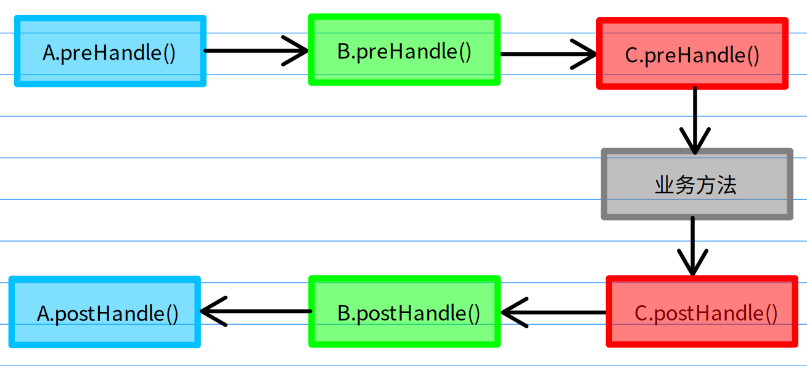
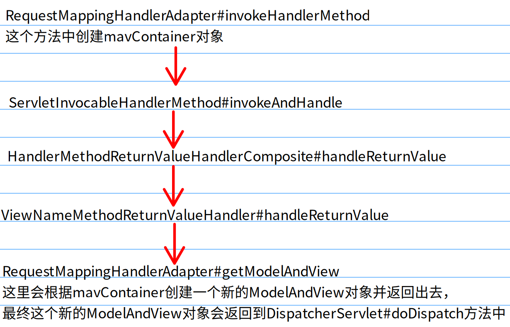
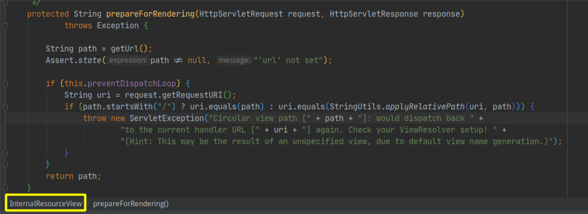
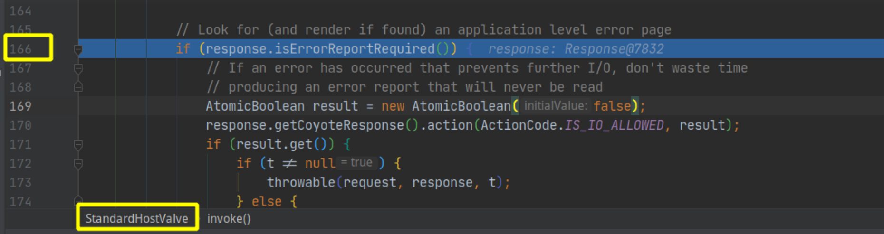
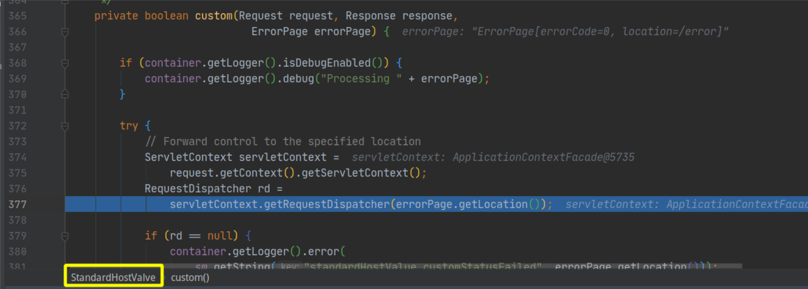
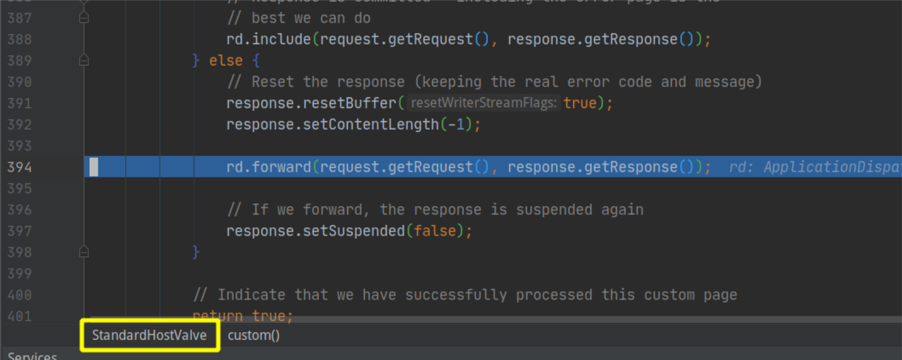

关于SpringMVC拦截器执行两遍的原因分析以及如何解决
最近在项目中碰到了如题的问题，在spring-boot项目中，同一次http请求，HandlerInterceptor拦截器执行了两次，与此同时这个问题还有个特点，它并没有干扰具体的业务功能，就是controller正常返回，没有任何错误。
什么情况下HandlerInterceptor会执行两遍？
并不是所有的controller都是这样的，经过测试目前发现有以下两种的controller会出现这样的情况（前提是你没有重写过它的RequestMappingHandlerAdapter和ViewNameMethodReturnValueHandler）。
@Controller
public class GreetingController {
/**
* 第一种情况：方法返回值类型为 void 类型，并且不存在返回内容对应的视图
*
* @param name
* @throws IOException
*/
@RequestMapping("/greet1")
public void greet1(String name) throws IOException {
System.out.println("name = " + name);
RequestAttributes requestAttributes = RequestContextHolder.getRequestAttributes();
HttpServletResponse response = ((ServletRequestAttributes) requestAttributes).getResponse();
PrintWriter writer = response.getWriter();
writer.write(name);
writer.flush();
writer.close();
}
/**
* 第二种情况：方法返回值类型为 String 类型，并且不存在返回内容对应的视图
*
* @param name
* @return
*/
@RequestMapping("/greet2")
public String greet2(String name) {
System.out.println("name = " + name);
return name;
}
}
对于以上两种情况，你所有的HandlerInterceptor都至少会执行两遍，甚至三遍。这里先给出怎么解决这个问题的方案，后面再分析问题原因。
如何解决HandlerInterceptor拦截器执行多次问题？
重写RequestMappingHandlerAdapter和ViewNameMethodReturnValueHandler这两个类，并将其注入容器中
public class CustomizedHandlerAdapter extends RequestMappingHandlerAdapter {
@Override
public void afterPropertiesSet() {
super.afterPropertiesSet();
setReturnValueHandlers(getReturnValueHandlers().stream().filter(
h -> h.getClass() != ViewNameMethodReturnValueHandler.class
).collect(Collectors.toList()));
}
}
public class HandlerVoidMethod extends ViewNameMethodReturnValueHandler {
@Override
public void handleReturnValue(Object returnValue, MethodParameter returnType, ModelAndViewContainer mavContainer, NativeWebRequest webRequest) throws Exception {
/*
* 这里只处理了void返回值的方法，对于String返回值的方法则没有处理，原因是系统中可能还会用到springmvc的视图功能（例如jsp）
* 如果说是前后分离的项目，springmvc层只提供纯接口的话，那么可以将下面代码全部删除，
* 只写上一行 mavContainer.setRequestHandled(true); 即可
*/
if (void.class == returnType.getParameterType()) {
mavContainer.setRequestHandled(true);//这行代码是重点，它的作用是告诉其他组件本次请求已经被程序内部处理完毕，可以直接放行了
} else {
super.handleReturnValue(returnValue, returnType, mavContainer, webRequest);
}
}
}
@Configuration
public class WebConfig {
@Bean
public HandlerVoidMethod handlerVoidMethod() {
return new HandlerVoidMethod();
}
@Bean
public CustomizedHandlerAdapter handlerAdapter(HandlerVoidMethod handlerVoidMethod) {
CustomizedHandlerAdapter chl = new CustomizedHandlerAdapter();
chl.setCustomReturnValueHandlers(Arrays.asList(handlerVoidMethod));
return chl;
}
}
通过以上代码，则能解决mvc拦截器执行多次的问题。
springmvc拦截器为什么会执行多次？
简单来讲就是controller中的void方法会导致springmvc使用你的请求url作为视图名称，然后它在渲染视图之前会检查你的视图名称，发现这视图会导致循环请求，就抛出一个ServletException，tomcat截取到这个异常后就转发到/error页面，就在这个转发的过程中导致了springmvc重新开始DispatcherServlet的整个流程，所以拦截器自然就执行了多次。
HandlerInterceptor相关知识
对于拦截器HandlerInterceptor的机制需要有个大致的了解，这里简单讲下springmvc中的拦截器是怎么执行的，我们都知道springmvc中处理请求都是从DispatcherServlet的doDispatch方法开始的，
// DispatcherServlet类 doDispatch方法
protected void doDispatch(HttpServletRequest request, HttpServletResponse response) throws Exception {
......省略部分前面的代码，直接从 1035行这里开始
// HandlerExecutionChain mappedHandler = getHandler(processedRequest); 在1016行有设置mappedHandler的值，HandlerExecutionChain是一个拦截器调用链，它是链式执行的，这里是链式执行所有的拦截器里面的 preHandle 方法
if (!mappedHandler.applyPreHandle(processedRequest, response)) {
return;
}
// 真正代用我们自己写的业务代码的入口
mv = ha.handle(processedRequest, response, mappedHandler.getHandler());
if (asyncManager.isConcurrentHandlingStarted()) {
return;
}
applyDefaultViewName(processedRequest, mv);
// 这里是链式执行所有的拦截器里面的 postHandle 方法
mappedHandler.applyPostHandle(processedRequest, response, mv);
......省略后面的代码
}
多个拦截器它的执行顺序是和栈的入栈出栈顺序有点类似，我们把preHandle方法比作入栈，postHandle方法比作出栈，所以就是preHandle先执行的postHandle反而后执行。
例如我们有三个拦截器，分别为 A，B，C。它们的执行顺序如下图：

拦截器执行的相关源码：
boolean applyPreHandle(HttpServletRequest request, HttpServletResponse response) throws Exception {
HandlerInterceptor[] interceptors = getInterceptors();//获取所有的拦截器
if (!ObjectUtils.isEmpty(interceptors)) {
for (int i = 0; i < interceptors.length; i++) {// 这里是从第一个开始
HandlerInterceptor interceptor = interceptors[i];
if (!interceptor.preHandle(request, response, this.handler)) {
triggerAfterCompletion(request, response, null);
return false;
}
this.interceptorIndex = i;
}
}
return true;
}
void applyPostHandle(HttpServletRequest request, HttpServletResponse response, @Nullable ModelAndView mv) throws Exception {
HandlerInterceptor[] interceptors = getInterceptors();//获取所有的拦截器
if (!ObjectUtils.isEmpty(interceptors)) {
for (int i = interceptors.length - 1; i >= 0; i--) {// 这里是从最后一个开始
HandlerInterceptor interceptor = interceptors[i];
interceptor.postHandle(request, response, this.handler, mv);
}
}
}
上面简要的讲了下拦截器从哪里开始以及它的执行顺序相关的东西，经过了拦截器的前置拦截之后，springmvc通过反射执行了我们的具体业务方法，那在执行具体的业务方法时有两个很重要的问题，一是如何处理我们业务方法的参数（千奇百怪的）；二是如何处理我们业务方法的返回值（也是多种多样的）。在springmvc中通过HandlerMethodArgumentResolver来处理方法参数，通过HandlerMethodReturnValueHandler来处理方法返回值。在本文中，方法的入参与本文所讨论的问题关系不大，因此这里就不展开叙述HandlerMethodArgumentResolver相关的东西了。重点说下与问题相关的HandlerMethodReturnValueHandler类。
HandlerMethodReturnValueHandler
对于controller方法的返回值的处理，springmvc框架中内置了20多种默认的返回值处理器，在RequestMappingHandlerAdapter#getDefaultReturnValueHandlers方法中可以看到它设置的一些默认的HandlerMethodReturnValueHandler
private List<HandlerMethodReturnValueHandler> getDefaultReturnValueHandlers() {
List<HandlerMethodReturnValueHandler> handlers = new ArrayList<>();
// Single-purpose return value types
// 返回值类型是ModelAndView或其子类
handlers.add(new ModelAndViewMethodReturnValueHandler());
// 返回值类型是Model或其子类
handlers.add(new ModelMethodProcessor());
// 返回值类型是View或其子类
handlers.add(new ViewMethodReturnValueHandler());
// ResponseBody注解
handlers.add(new ResponseBodyEmitterReturnValueHandler(getMessageConverters(), this.reactiveAdapterRegistry, this.taskExecutor, this.contentNegotiationManager));
handlers.add(new StreamingResponseBodyReturnValueHandler());
// 用来处理返回值类型是HttpEntity的方法
handlers.add(new HttpEntityMethodProcessor(getMessageConverters(), this.contentNegotiationManager, this.requestResponseBodyAdvice));
handlers.add(new HttpHeadersReturnValueHandler());
handlers.add(new CallableMethodReturnValueHandler());
handlers.add(new DeferredResultMethodReturnValueHandler());
handlers.add(new AsyncTaskMethodReturnValueHandler(this.beanFactory));
// Annotation-based return value types
// 返回值有@ModelAttribute注解
handlers.add(new ModelAttributeMethodProcessor(false));
handlers.add(new RequestResponseBodyMethodProcessor(getMessageConverters(), this.contentNegotiationManager, this.requestResponseBodyAdvice));
// Multi-purpose return value types
// 返回值是void或String, 将返回的字符串作为view视图的名字
handlers.add(new ViewNameMethodReturnValueHandler());
// 返回值类型是Map
handlers.add(new MapMethodProcessor());
// Custom return value types，自定义返回值处理
if (getCustomReturnValueHandlers() != null) {
handlers.addAll(getCustomReturnValueHandlers());
}
// Catch-all
if (!CollectionUtils.isEmpty(getModelAndViewResolvers())) {
handlers.add(new ModelAndViewResolverMethodReturnValueHandler(getModelAndViewResolvers()));
}
else {
handlers.add(new ModelAttributeMethodProcessor(true));
}
return handlers;
}
在本文的问题中，controller的返回值为void和String两种都有，刚好对应ViewNameMethodReturnValueHandler这个处理器
public class ViewNameMethodReturnValueHandler implements HandlerMethodReturnValueHandler {
@Override
public boolean supportsReturnType(MethodParameter returnType) {
Class<?> paramType = returnType.getParameterType();
// 返回值类型匹配，void和String
return (void.class == paramType || CharSequence.class.isAssignableFrom(paramType));
}
@Override
public void handleReturnValue(@Nullable Object returnValue, MethodParameter returnType,
ModelAndViewContainer mavContainer, NativeWebRequest webRequest) throws Exception {
// 返回值处理这里，只处理了String类型的返回值，将返回值的结果作为视图名称设置到ModelAndViewContainer对象中
// 对于void类型的返回值，这里并没有处理，
if (returnValue instanceof CharSequence) {
String viewName = returnValue.toString();
mavContainer.setViewName(viewName);
if (isRedirectViewName(viewName)) {
mavContainer.setRedirectModelScenario(true);
}
}
else if (returnValue != null) {
// should not happen
throw new UnsupportedOperationException("Unexpected return type: " +
returnType.getParameterType().getName() + " in method: " + returnType.getMethod());
}
}
}
这里有个小细节，handleReturnValue方法中returnValue参数前面是加了一个@Nullable注解的，意味这这个参数的值可能是null，当你的controller为void方法时，returnValue就会为null，那handleReturnValue这个方法就不会对mavContainer这个对象做任何处理。
ModelAndView对象的流转过程
mavContainer这个参数是从RequestMappingHandlerAdapter中的invokeHandlerMethod方法中创建并一路传进来的，整个调用链如下图：

最终在DispatcherServlet的doDispatch方法中得到上图中最后返回的ModelAndView对象
protected void doDispatch(HttpServletRequest request, HttpServletResponse response) throws Exception {
......省略部分前面的代码
// Actually invoke the handler.
mv = ha.handle(processedRequest, response, mappedHandler.getHandler());
......省略部代码
// 直接看这里，设置默认视图
applyDefaultViewName(processedRequest, mv);
......省略部分前面的代码
}
private void applyDefaultViewName(HttpServletRequest request, @Nullable ModelAndView mv) throws Exception {
// 这里判断是否设置了视图，通过前面的分析，我们可以知道，由于我们的controller是void类型的，所以是没有设置视图的
if (mv != null && !mv.hasView()) {
// 获取默认视图名称
String defaultViewName = getDefaultViewName(request);
if (defaultViewName != null) {
// 设置默认视图名称
mv.setViewName(defaultViewName);
}
}
}
获取默认视图名称的方法：getDefaultViewName，由于这个方法里面调用栈比较深，这里直接给出它调用的最里面的那个方法：
org.springframework.web.util.UrlPathHelper#getPathWithinApplication
public String getPathWithinApplication(HttpServletRequest request) {
String contextPath = getContextPath(request);
String requestUri = getRequestUri(request);
String path = getRemainingPath(requestUri, contextPath, true);
if (path != null) {
// Normal case: URI contains context path.
return (StringUtils.hasText(path) ? path : "/");
}
else {
return requestUri;
}
}
最后这个方法其实就是获取了controller的requestMapping，然后返回出去。再结合前面的getDefaultViewName方法可知，这个默认视图名称就是requestMapping的值。在渲染视图之前springmvc还做了个判断，就是看你的视图名称是不是本次请的uri中的一部分或者和uri一样，如果是的话，就会抛出一个异常，说你是一个循环视图路径

tomcat对错误页面的处理
在tomcat的StandardHostValve类中，它获取到了上面springmvc抛出的ServletException异常，它写了个很明了的注释，寻找一个应用级别的错误页面，如果存在的话则渲染它（就是重定向到错误页面）

通过debug直到执行到下面的代码，通过下图中第二行后面的debug信息也可以看到错误页面的路径为/error

通过RequestDispatcher这个类名能猜到应该是请求分发器，看看它是如何创建RequestDispatcher对象的
public RequestDispatcher getRequestDispatcher(final String path) {
......省略部代码
try {
......省略部代码
// Construct a RequestDispatcher to process this request
// 创建一个新的请求调度器来处理该请求
return new ApplicationDispatcher(wrapper, uri, wrapperPath, pathInfo,
queryString, mapping, null);
} finally {
mappingData.recycle();
}
}

这里可以很明显的看到开始了请求转发，这对于springmvc来讲就已经开始了一个新的请求，它会再次进入到DispatcherServlet的doDispatch方法中，整个springmvc的流程会再重新走一遍，所以拦截器自然也会再执行一次，只不过这次在拦截器中看到的url已经变成/error了，而不是之前的requestMapping里面的值。